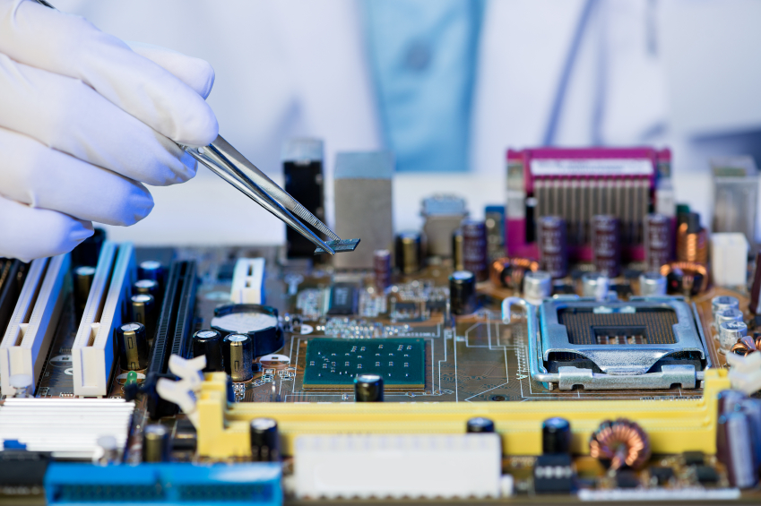

I do so much work in school, although I'm not sure as to what the point of half of it really even is. After high school and college, I want to become a computer engineer, one who designs and creates both computer hardware and software. That is why the only class that I feel even matters at all now is computer science. I feel that by making this website, I may be accomplishing something, as it is both a learning experience and to some extent, "fun." I've applied to colleges that offer majors in both computer engineering and computer science. I know that whichever college I am accepted to, I will develop a great understanding and be successful in this career, which I find most appealing to me. Maybe one day, I can develop websites that are a thousand times better than this one. At that point, I won't be spending my time writing essays and memorizing facts that I don't care about.
